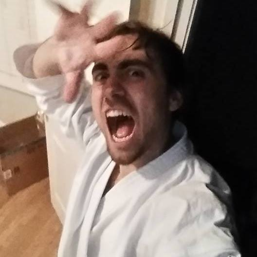

I started High School in Ravenna (Italy) where I got my secondary school diploma in Electronic and Telecommunications with a dissertation about wind energy applications. I feel like I always had a passion for I.T. but it took me a while to find a learning method that would suit me. Luckily I had wonderful teachers there that pushed me to become a better person, I will always be grateful for that. After High School I moved to Ferrara (Italy) and got my Bachelor degree in I.T. and Automation Engineering (Thesis: Study and realization of a Task Controller Client ISO 11783) and finally my Master degree in I.T. Engineering. (Thesis: A Network-Aware Middleware for Tactical Networks).
I feel like I always had a lot going on in my life. I changed living place multiple times over the years and that gifted me with the many different people I met and lived with. I also did many jobs during my studies in very different fields (I was a farmer, a barman, a programmer, a home teacher, a lab assistant, and finally a software developer). All these experience and encounters made me into the person that I am today and I will always be grateful for all the opportunities that I had in my life. Currently I live in Pensacola (FL) (under a J1 Visa) and I work for IHMC as a Research Associate. My job consists in solving problems related to military networks mainly by researching and implementing novel approaches to network monitoring and communication middleware adaptation.
Other than networking, I am also interested in embedded solutions (mainly ARM platform for automotive applications), A.I. (swarm robots’ intelligence, Prolog applications), and applications of game making (problem solving by “gamification” and the UNITY engine).
In my free time I enjoy hanging out, going to the beach, and to concerts. I read and listen to a lot of music (mainly classics and Post Rock recently, I also play and write but I don’t really have a lot of time to dedicate to these hobbies too). This year I started Karate again after a two years stop and I am now training for my second Dan! Other passions include Netflix Binge Watching and cooking. This summer I hope to learn a bit of surfing and hopefully I will start playing Tabletop Games again!